Префектура Вакаяма · Сирахама · рёкан
Рёкан «Куросио-со» в Сирахаме: Вакаяма в номере, на тарелке и в бокале
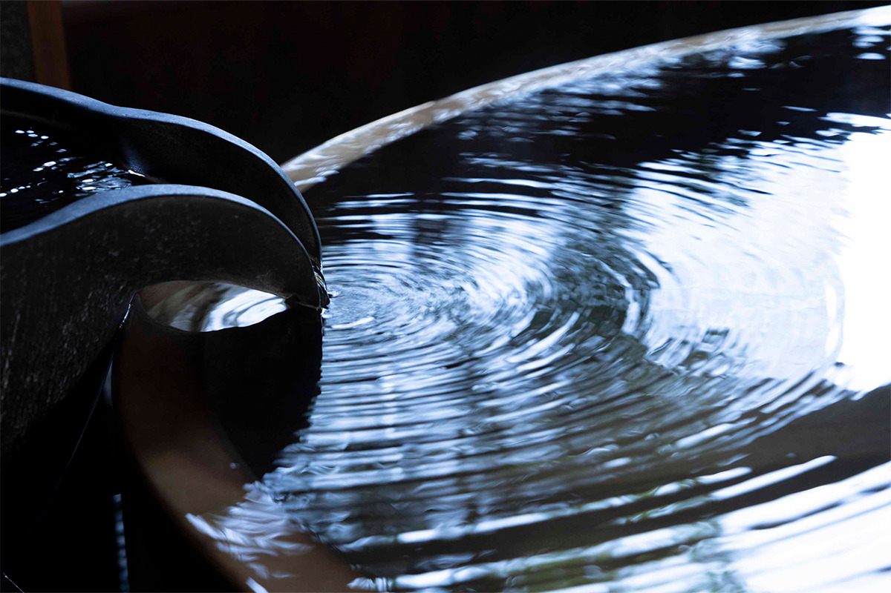
Сколько всего вы знаете о префектуре Вакаяма? В рёкане «Куросио-со» на курорте Сирахама её открываешь заново: в еде и сакэ, в мебели, в посуде и даже в носках, которые можно забрать домой.
Рёкан
Дом, где не хочется уезжать
Сирахама стоит на тихоокеанском побережье префектуры Вакаяма и славится горячими источниками. Здесь работает «Куросио-со», небольшой рёкан, где о крае рассказывает буквально всё: еда, сакэ, онсэн с водой прямо из источника, сами комнаты, их убранство и даже мелочи в ванной. После такого вечера ловишь себя на мысли, что хочется остаться здесь насовсем.
Через вход гость попадает в просторное лобби, залитое солнцем. Главная деталь интерьера это огромные стволы криптомерии возрастом около ста лет: дерево долго пролежало в земле где-то в префектуре Вакаяма, прежде чем попасть сюда. В лобби есть лавка с товарами местных мастеров и уголок с библиотекой, где можно полистать книги. А с террасы открывается вид на улицы Сирахамы и на море.
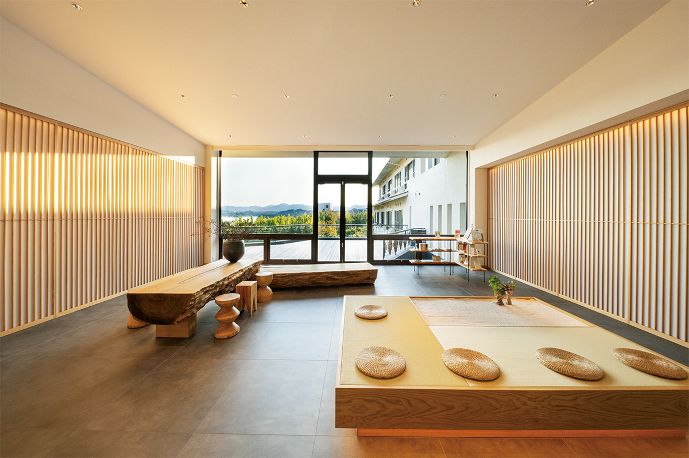
Номера
Одиннадцать комнат из старинной книги
Номеров всего 11: восемь стандартных с видом на сад и три угловых полулюкса. Интерьер в современном японском стиле, и в каждой комнате что-то сделано в Вакаяме: изделия местных ремёсел, мебель, древесина из лесов Кисю, как издавна называют этот край.
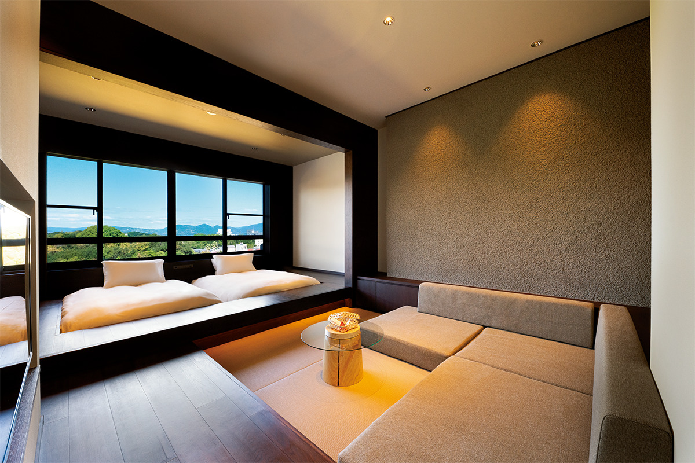
В угловых полулюксах есть собственная полуоткрытая баня с купелью из керамики Сигараки. Гостиная со всех сторон обшита деревом и задумана как комната для медитации: тёплое дерево успокаивает, и здесь хорошо побыть наедине с собой.
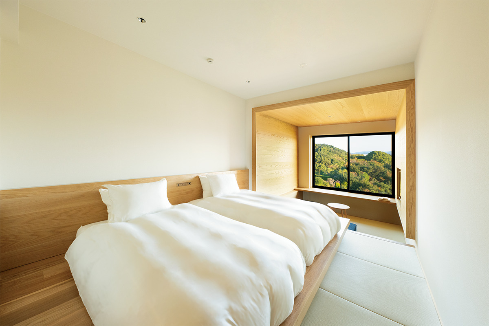
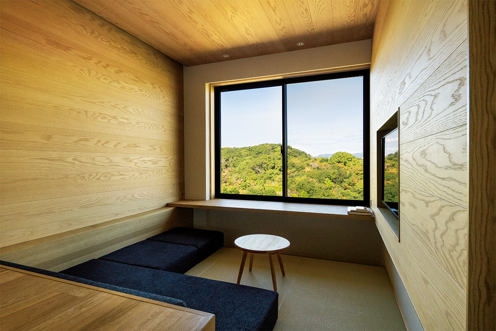
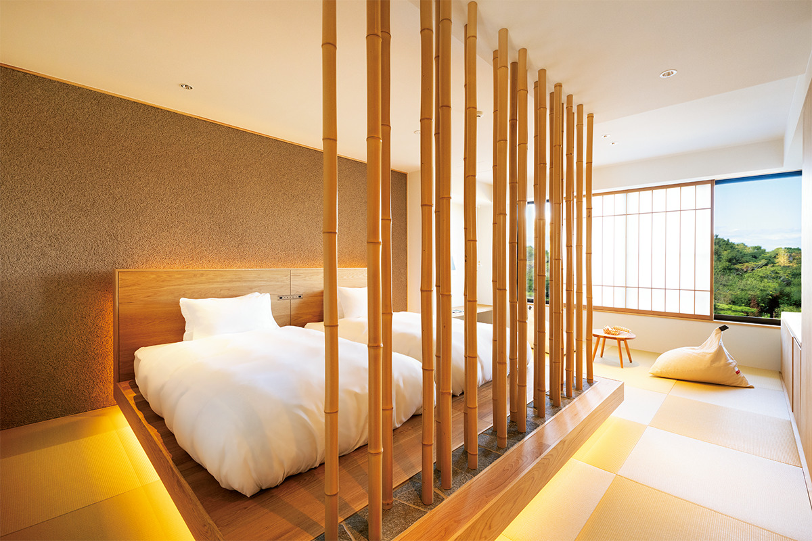
Детали
Найдите Вакаяму в номере
Фирменная одежда для отдыха и постельное бельё приятны на ощупь, а у крафтового пива, апельсинового сока и сладостей из Вакаямы, которые ждут в номере, продуманная упаковка. В ванных стоит косметика японской марки «Осадзи» (OSAJI), а в общей купальне установлены душевые лейки «Рефа» (ReFa). Такие мелочи работают незаметно: понимаешь, что расслабился, уже потом.
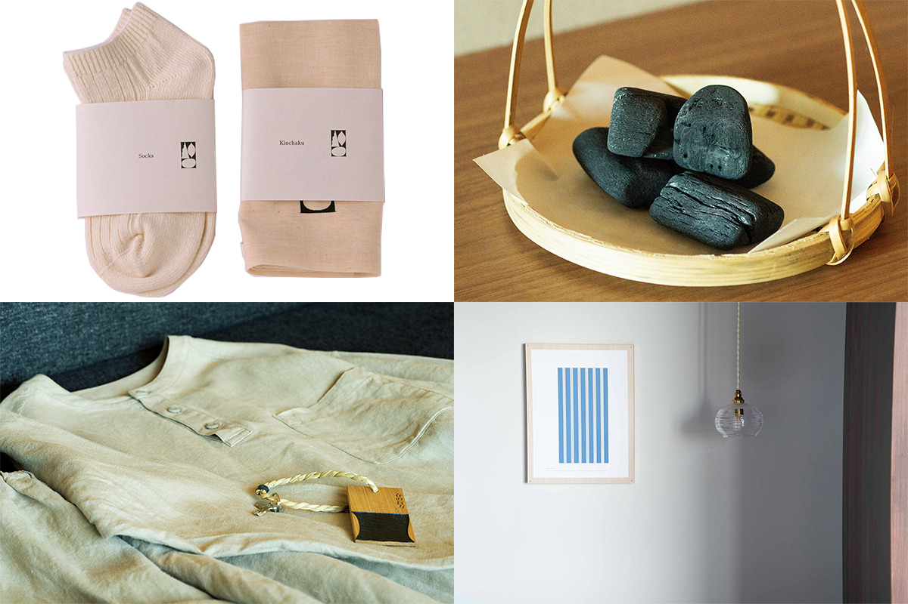
Откуда у рёкана такой вкус? «Куросио-со» управляет компания «Фригейт Сирахама», входящая в группу «Пал Груп Холдингс», которую в Японии знают по множеству марок одежды. До января 2023 года группа держала в этом здании гастрономический рёкан, а потом переделала его под новую марку. Часть сотрудников раньше работала в модной рознице, отсюда и чувство стиля. Молодых в команде много, и атмосфера здесь живая.
«„Куросио-со“ родился из нескольких источников: из того, что хотим сказать мы сами, из чувств местных производителей, мастеров и всех, кто делал этот проект вместе с нами, и из 137-го фрагмента „Записок от скуки“, где воспета красота природы»
президент компании «Фригейт Сирахама»
Кухня
Местная гастрономия без лишнего
Меню составил шеф ресторана японской кухни «Тэносима» в токийском районе Минами-Аояма, отмеченного одной звездой Мишлен. Ужин не следует привычному формату рёкана с бесконечной чередой блюд: это японская кухня, где местные блюда Вакаямы получают современную трактовку, а всё лишнее убрано. Через еду гостям хотят показать природу края и смену сезонов, поэтому и на ужин, и на завтрак идут в основном продукты, которые привозят напрямую от местных фермеров и рыбаков. Подают всё в тщательно подобранной посуде.
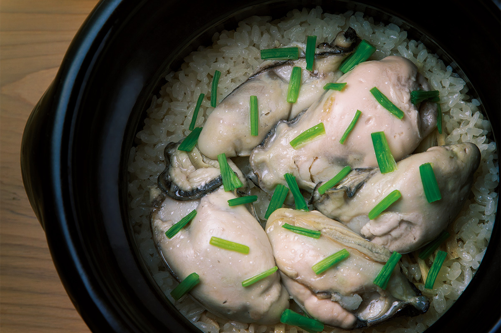
Пары
Сакэ, умэсю и виски к каждому блюду
Самое интересное за ужином это пары: к каждому блюду подбирают напиток, сделанный в Вакаяме.
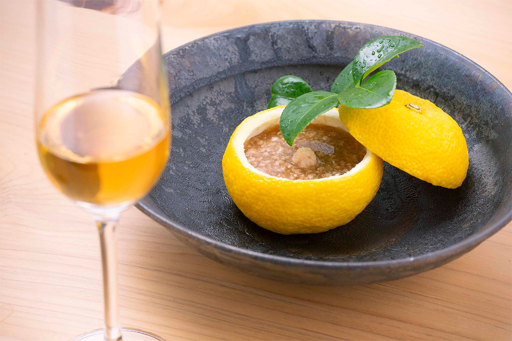
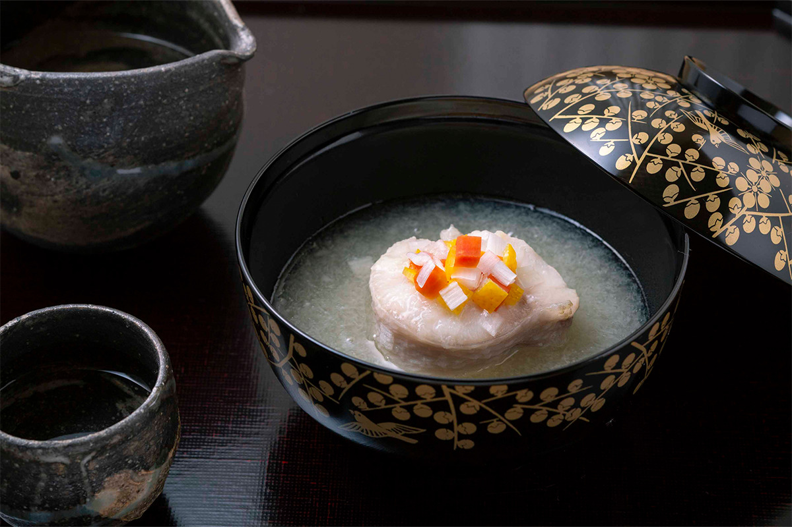
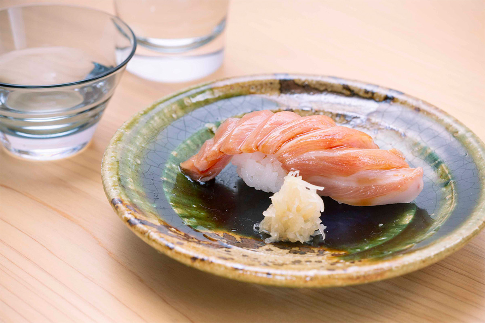
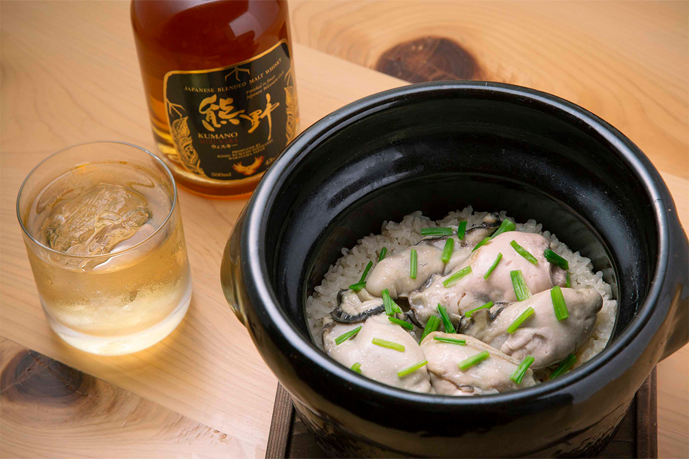
Утром снова стоит сходить в баню. Частную купель из хиноки можно бронировать с 15:00 до 23:00 и с 6:00 до 9:00, а после утреннего купания завтрак кажется ещё вкуснее.
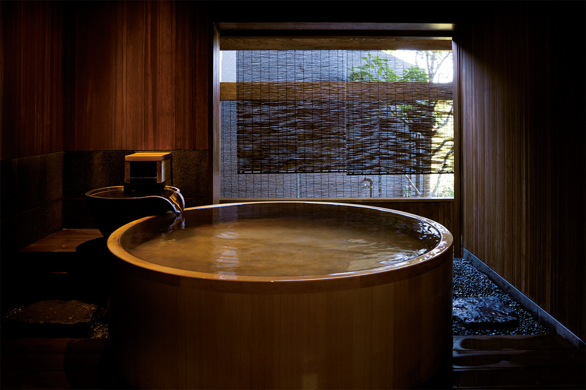
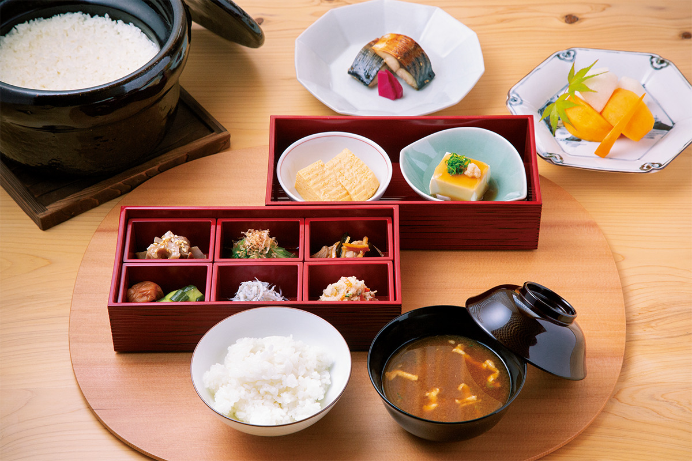
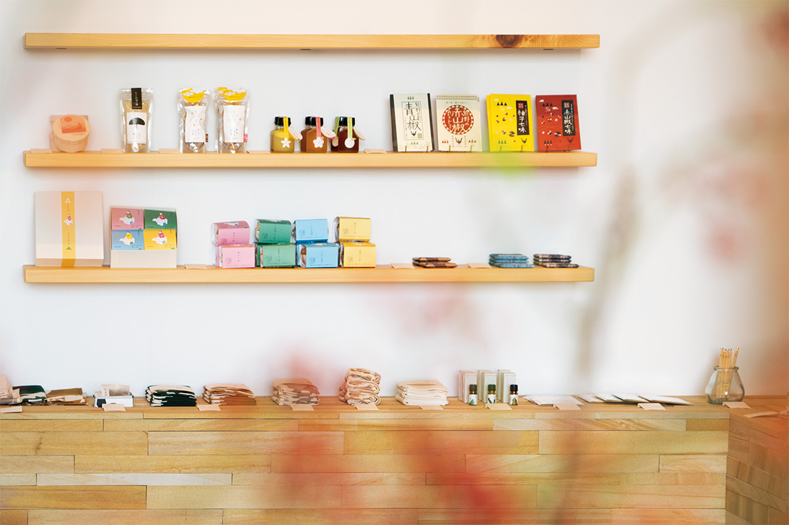
Замысел
Путешествие по «Запискам от скуки»
С «Записками от скуки» президент компании познакомилась ещё студенткой, на занятиях в школе в Швейцарии, и книга запомнилась ей надолго. Так появилась мысль воплотить этот взгляд на мир в японском рёкане. В итоге получился дом, который предлагает поездку с подлинной красотой, вдохновением и вниманием к каждому моменту. Он подойдёт тем, кто любит придумывать путешествие под себя.
«Куросио-со»
- Адрес
- префектура Вакаяма, уезд Нисимуро, Сирахама, 1155
- Телефон
- +81 739-42-3555
- Номера
- 11
- Цены / Вход
- от 36 300 иен с ужином и завтраком, налог и сервисный сбор включены, курортный налог отдельно
- Заезд / выезд
- 15:00 / 11:00
- Как добраться
- от станции JR Сирахама на такси около 10 минут; от аэропорта Нанки-Сирахама на такси около 10 минут; на машине около 25 минут от съезда Нанки-Танабэ скоростной дороги Ханва
- Сайт
- kuroshio-sou.com
Фото: Адзуса Тодороки.